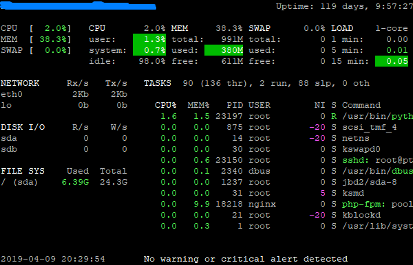
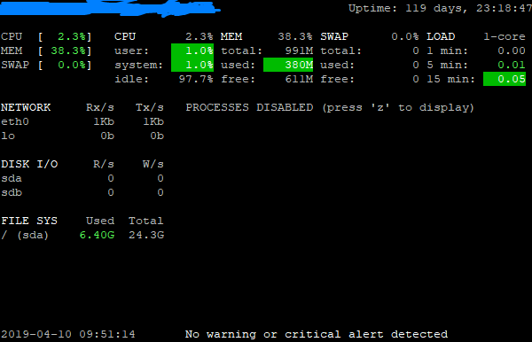
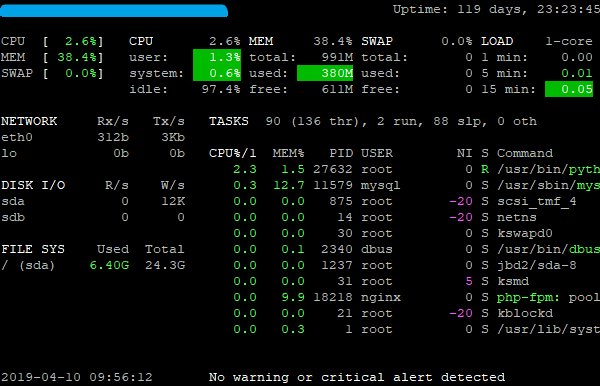
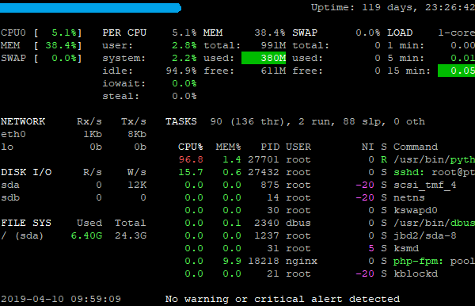
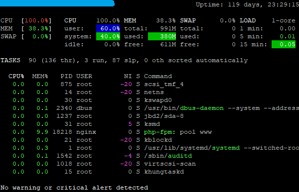
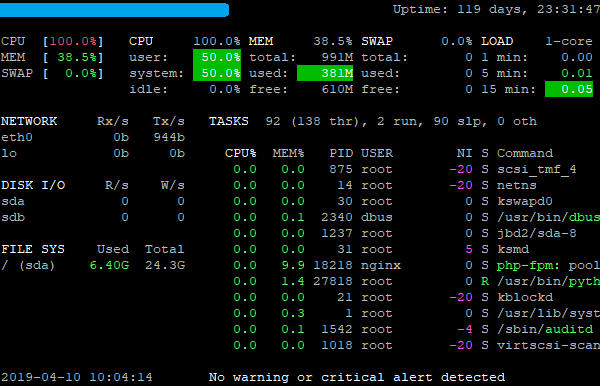

We can monitor system resource usage through the glances tool, which also supports cross-platform monitoring.
Options
Here are some options for glances command:
Option
Description
‑‑disable-process
Process module is not included when starting glances to save CPU expenses.
-0 or ‑‑disable-irix
The CPU usage of the task is divided by the logical CPU number.
-1 or ‑‑percpu
Individual usage of each CPU is shown when the glances starts.
-2 or ‑‑disable-left-sidebar
Network, Disk I/O, Filesystem and Sensors modules are not included when starting glances.
-3 or ‑‑disable-quicklook
The top menu does not load the quick look module when glances starts.
-4 or ‑‑full-quicklook
When glances starts, the top menu loads only quick look and load modules.
‑‑disable-bold
Do not highlight text headings when glances starts.
‑‑enable-process-extended
Show additional information about the top process.
-p PORT or ‑‑port PORT
Specify the TCP port number on the client or server side. The default port number is 61209.
-B BIND_ADDRESS or ‑‑bind BIND_ADDRESS
Bind the server side to a given IPv4 or IPv6 address or hostname.
‑‑username
Specify the username of a client or server.
‑‑password
Specify the password of a client or server.
-q or ‑‑quiet
Start but do not display the interactive graphical interface.
Interactive Commands
Here are some interactive commands for glances:
Option
Description
ENTER
Sets the process name to display.
q or ESC or CTRL+C
Exits the current Glances session.
Show or Hide Commands
Here are some show or hide commands for glances:
Option
Description
b
Display the network I/O in bits or bytes.
d
Shows or hides disk I/O statistics.
e
Shows or hides the statistics for top expansion.
E
Clears the process name used to match.
f
Shows or hides file system and directory monitoring statistics.
F
Displays the space used by the file system or free space.
h
Shows or hides the help window.
l
Shows or hides log messages.
n
Shows or hides network statistics.
T
Displays merged network I/O.
U
Displays the total amount of network I/O transmissions.
z
Shows or hides process statistics.
0
Activate or inactivate Irix/Solaris mode. Task CPU usage is divided by the total number of CPUs.
1
Displays global CPU statistics or statistics for each CPU.
2
Shows or hides the left toolbar.
3
Shows or hides the quick look module.
4
Shows or hides the quick look and load module.
/
Displays the command line or command name.
Sorting Commands
Here are some sorting commands for glances:
Option
Description
a
Automatic sorting. If CPU is greater than 70% than sort by CPU usage, if MEM is greater than 70% than sort by MEM usage, if CPU iowait is greater than 60% than sort by I/O read and write.
c
Sort by CPU usage.
i
Sort by I/O rate.
m
Sort by memory usage.
p
Sort by process name.
t
Sort by CPU times.
u
Sort by user.
Examples
Installation
Before we start using glances, we need to install it first:
1
yum install glances -y
Run Glances With Default Modules
1
glances

Disable Process Module
1
glances --disable-process

Disable Irix
1
glances -0 # This is equivalent to glances --disable-irix

Per CPU
1
glances -1 # This is equivalent to glances --percpu

Disable Left Sidebar
1
glances -2 # This is equivalent to glances --disable-left-sidebar

Disable Quick Look
1
glances -3 # This is equivalent to glances --disable-quicklook

Enable Full Quick Look
1
glances -4 # This is equivalent to glances --full-quicklook